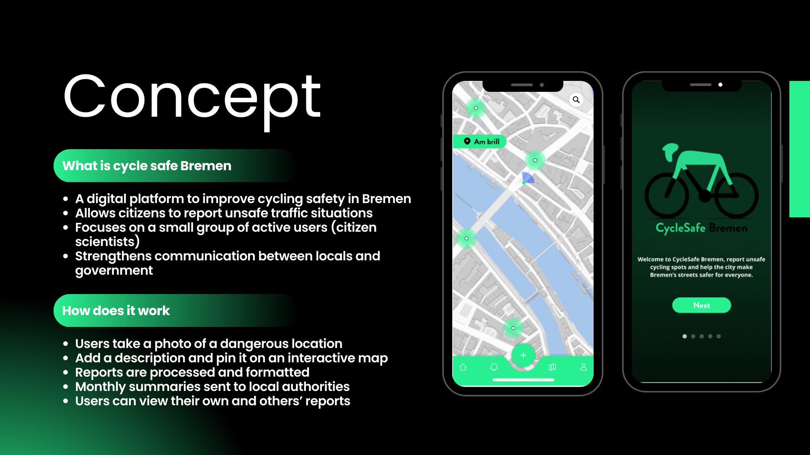
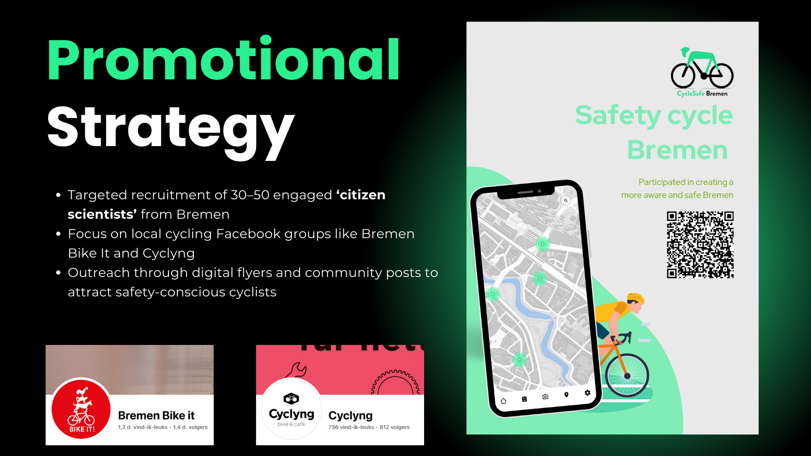
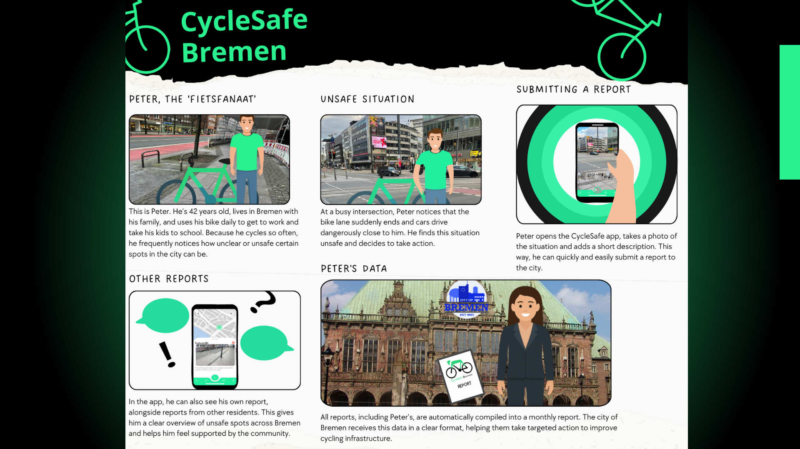
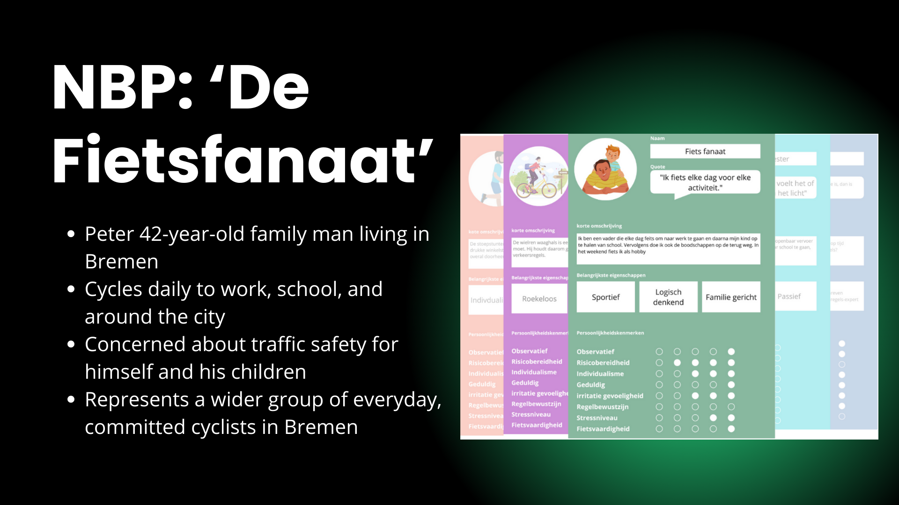

Tackling Real-World Cycling Challenges Through Design




CycleSafe Bremen was a particularly engaging project during our Design Across Borders course. Our team traveled to Bremen, Germany, tasked with exploring how digital solutions could contribute to the city's goals of promoting cycling and improving its infrastructure. This project went beyond simply designing a feature; it involved a comprehensive approach to understanding a complex real-world problem.
Our process was deeply rooted in user-centered design. We conducted extensive desk research to grasp the existing context, followed by in-depth interviews with cyclists and stakeholders in Bremen to gain firsthand insights into their needs and challenges. We utilized tools like storyboarding and persona creation – essential for empathizing with our target users and grounding our design decisions. The project involved numerous iterations, each informed by user testing, allowing us to refine our concepts based on direct feedback. Ultimately, we developed a holistic service that included a mobile application, a supporting website, and a strategic promotional plan. CycleSafe Bremen was a powerful learning experience in navigating the complexities of designing for a real-world challenge.